Natjecanje u Osijeku "Olimpiske nade"
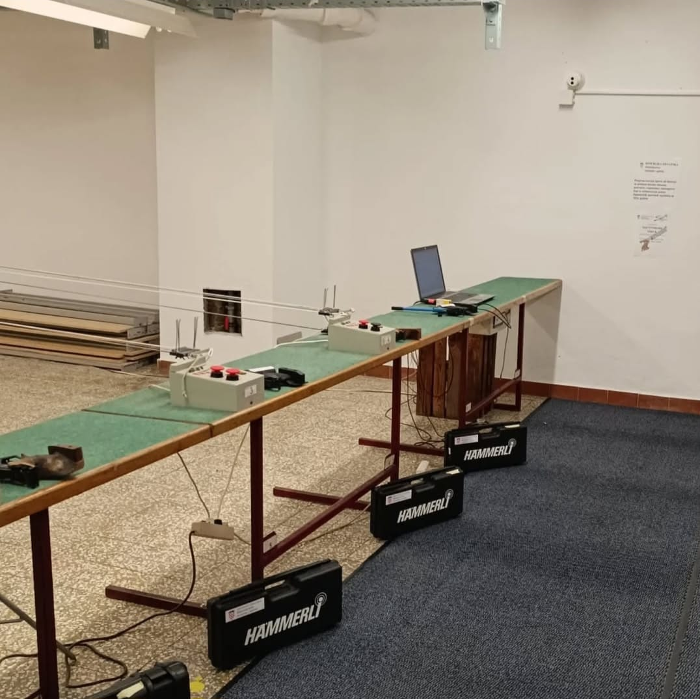
Streljana SK "Špiro"
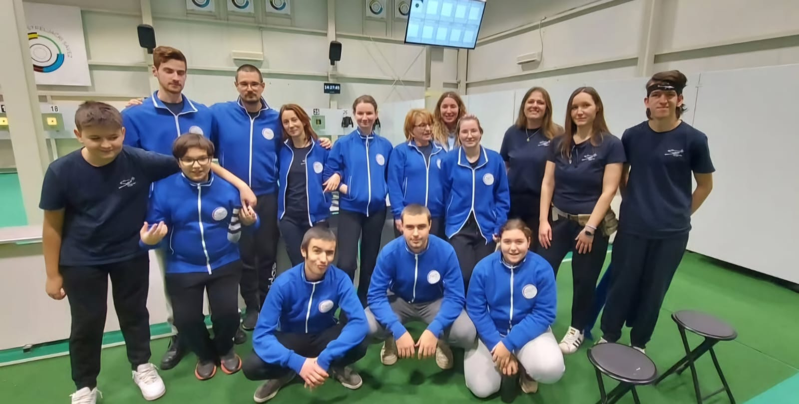
Najecanje u Zagrebu "Prvenstvo Zagreba" - Natkov rekord na zraku
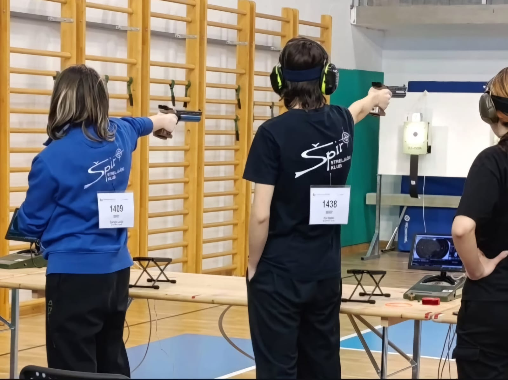
Državno natjecanje u Solinu - Mixed team ft. Lucija Špirelja
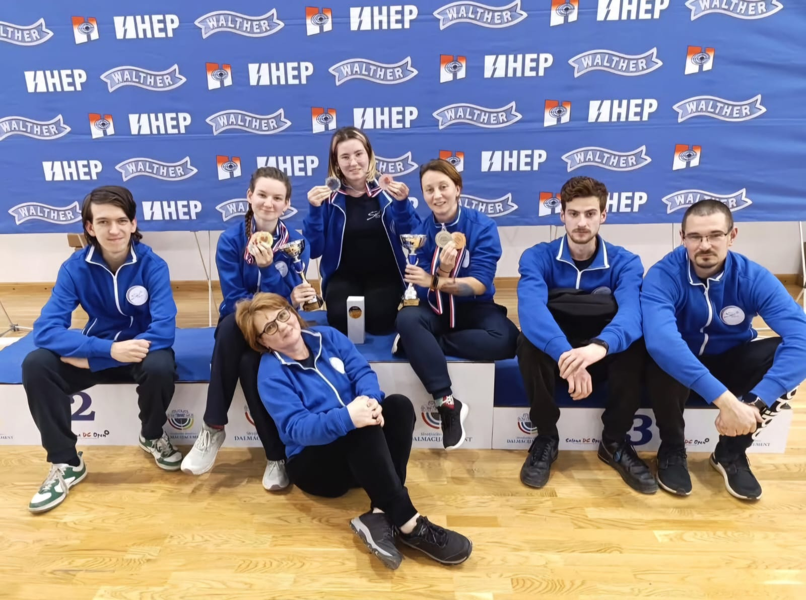
Državno natjecanje u Solinu
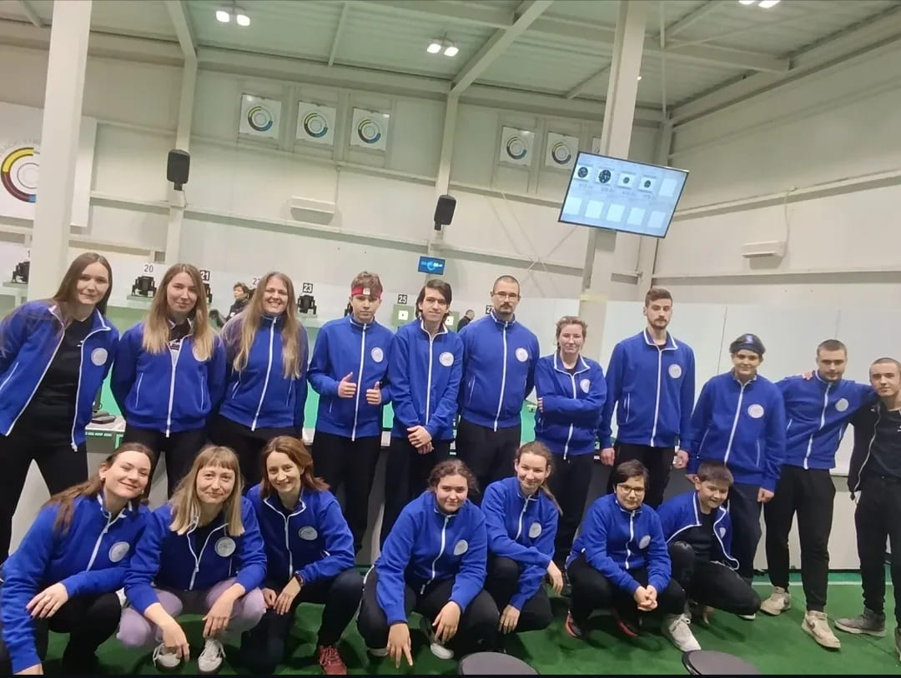
Juniorsko županijsko natjecanje u Zagrebu
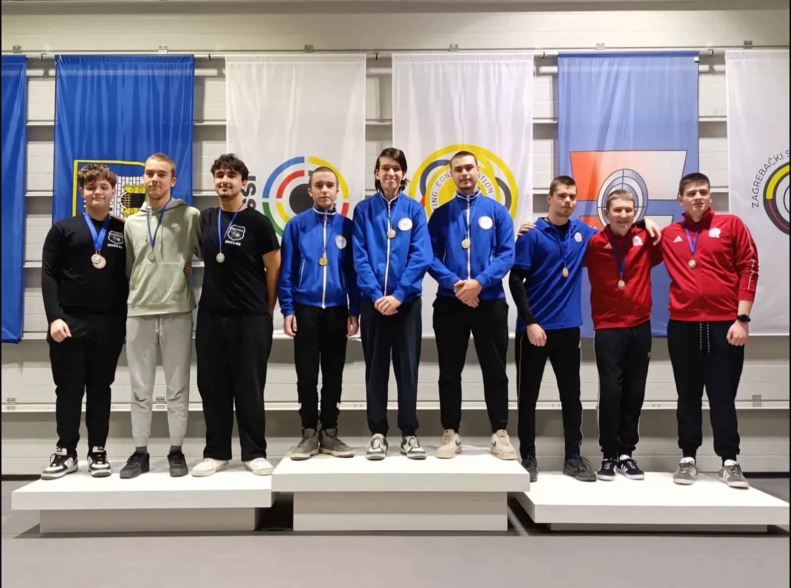
Juniorsko županijsko natjecanje u Zagrebu - Ekipno zlato (pogodite ko je kerijao)
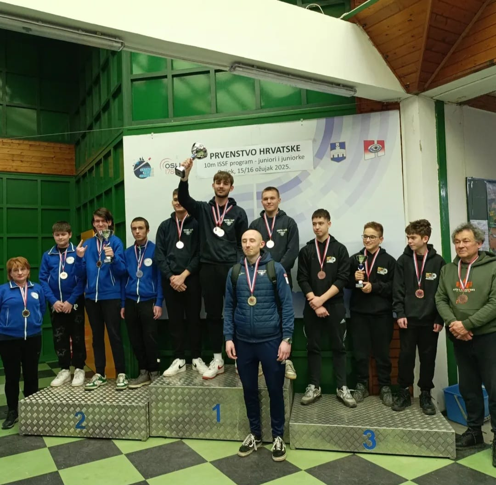
Juniorsko državno natjecanje u Osijeku
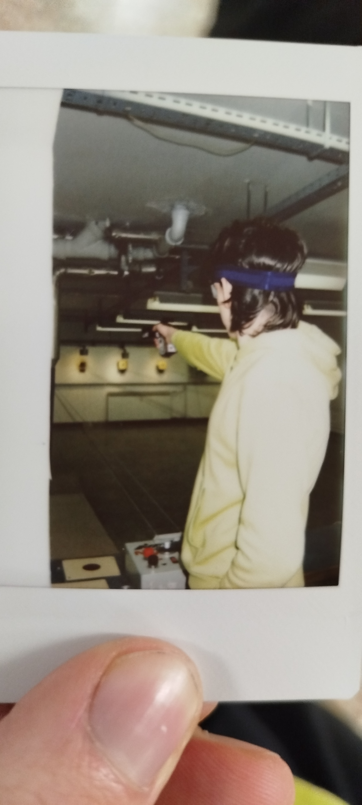
Sentimentalna slika Natka
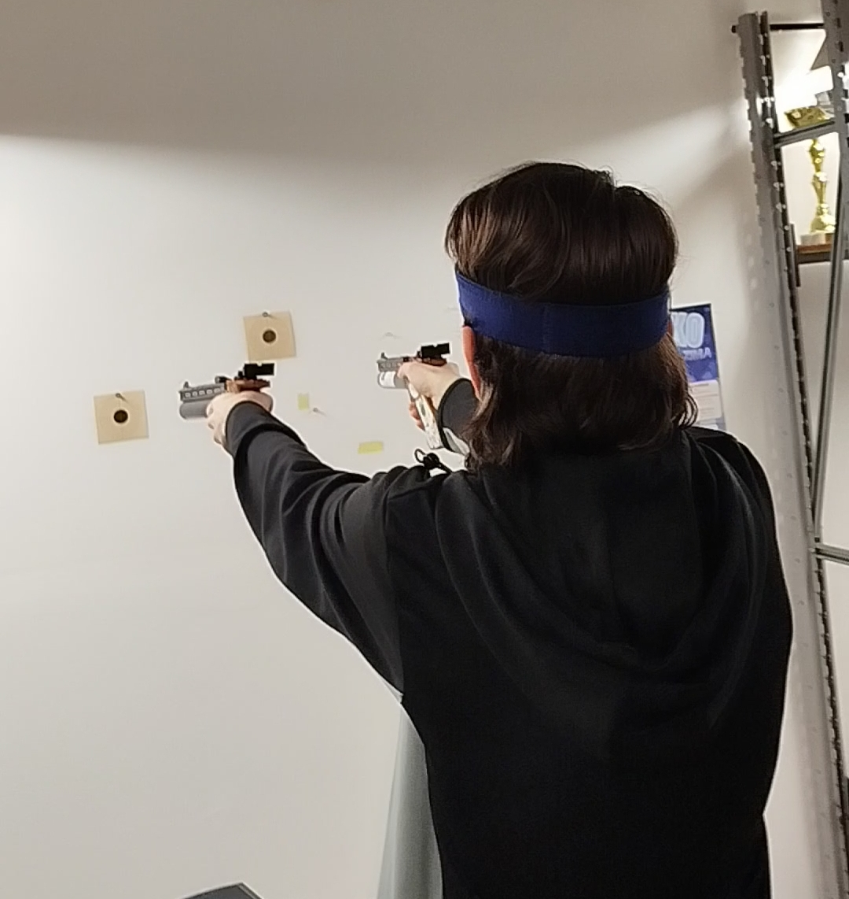
Double trouble
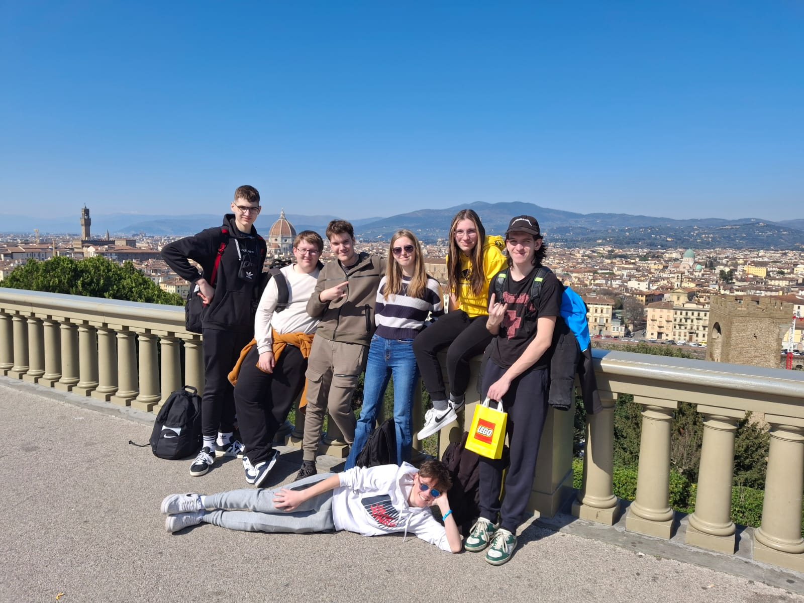
Putovanje u Firencu
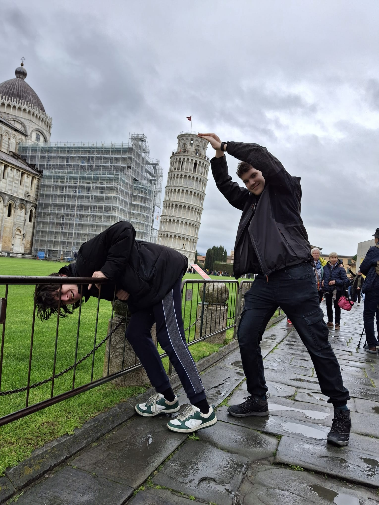
Pisa...Natko i Lovro kada vide da je sljedeći sat hrvatski
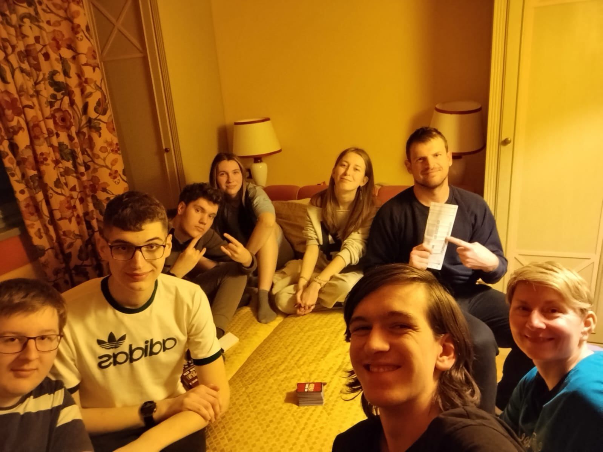
Kartanje sa profesorima (Zlatko se okrenuo protiv Dore, to je neoprostivo)
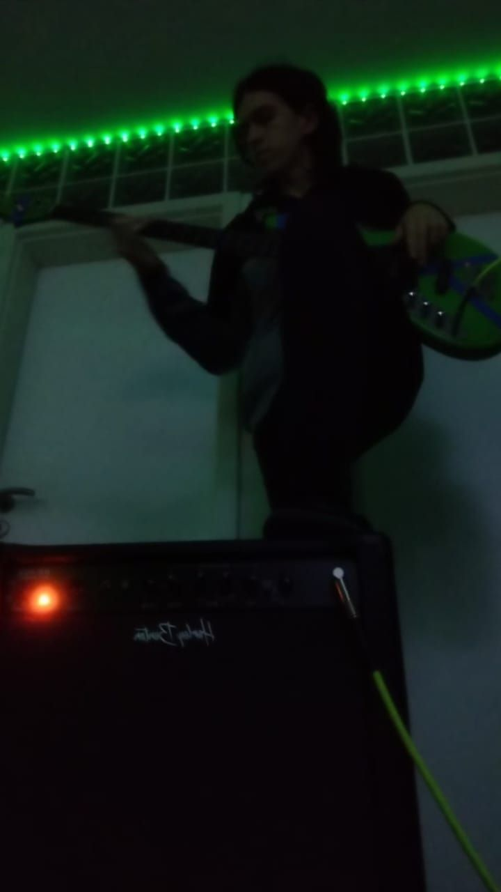
Late night koncert u podrumuPov: vi ste natkova gitara